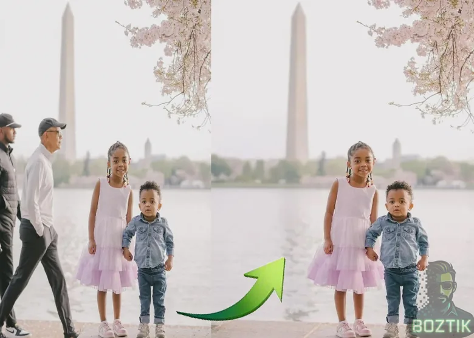
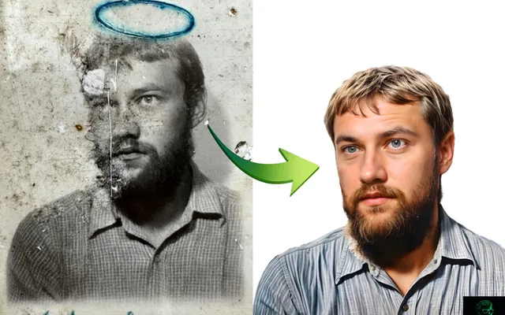
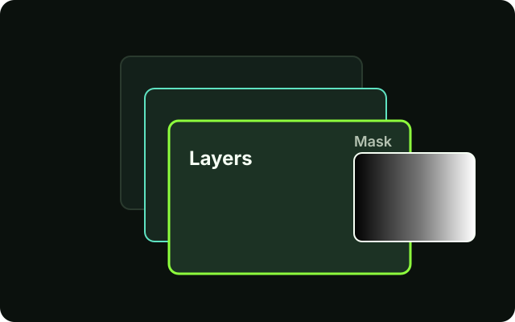
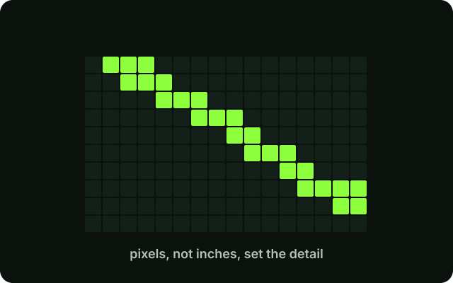
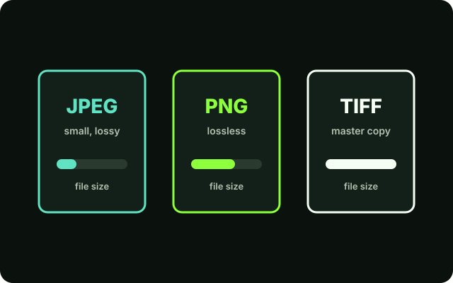
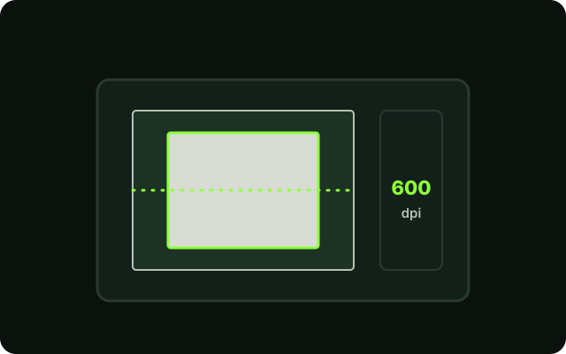
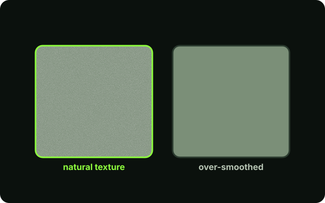
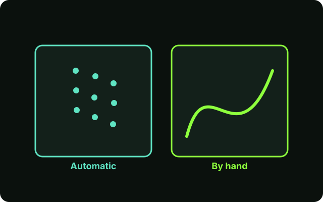

Boztik Guides
Learn to see photos differently.
Practical photography and photo-editing guides that explain the tools, the terms and the techniques, so you can follow along and make better images, one step at a time.
Written for beginners, and detailed enough to be useful if you already edit.

New to photo editing? Start with these three.
A short path through the guides, in the order that makes each one easier.
- Layers and MasksEvery edit in this site's guides builds on layers. Learn them once, in about ten minutes.
- Scanning Old PhotographsA clean scan is the best head start a restoration can have, and it is easy to get wrong.
- Restoring Old PhotographsPut it together: assess, repair, fix tone and colour, and export without harming the original.
All guides
8 guides so far. New ones are added when they can be written properly, not to pad the list.
-

Photo RestorationUpdatedHow to Restore Old Family Photographs: A Beginner's Guide
A step-by-step workflow for dust, scratches, creases, fading and faces, with Photoshop steps and honest advice on where AI helps and where it misleads.
-

Photoshop BasicsNewUnderstanding Layers and Masks in Photoshop
The one idea behind almost every edit: stack changes on layers, and use masks to control exactly where each change shows.
-

File Formats & QualityNewImage Resolution and DPI Explained for Beginners
Pixels, PPI and DPI without the jargon: how many pixels a photo needs for the screen or for a print, and how to check yours.
-

File Formats & QualityNewJPEG vs PNG vs TIFF: Which Format Should You Use?
What each file format is good at, why you should keep a master copy, and a simple rule for choosing when you save.
-

Photo RestorationNewHow to Scan Old Photographs Without Losing Image Quality
Settings, handling and a clean workflow for digitising prints so the scan is a good starting point for any restoration.
-
RetouchingUpdated
How to Remove Objects From Photos in Photoshop
Which tool to reach for, how to rebuild the background, and how to check that a removal looks real instead of patched.
-

RetouchingUpdatedPhoto Editing Mistakes That Make Photos Look Artificial
The tells that give an edit away, why each happens, and how to fix it in Photoshop.
-

AI-Assisted EditingUpdatedAI Photo Editing vs Manual Editing: Which Should You Use?
Where automatic tools genuinely help, where they quietly change the picture, and a simple way to check an AI result.
No guides match that search.
Try a shorter word, or clear the filters to see every guide.
How these guides are written
- Beginner first.Technical terms are explained where they first appear, so you should not need to search elsewhere.
- Photoshop steps are labelled.Menu paths and shortcuts sit in boxes marked "In Photoshop", apart from advice that applies to any editor. Menus can differ slightly between versions.
- Honest about limits.Each guide says what a technique cannot do, and cites its sources where it relies on them.
See the editing these guides come from.

Enjoying Boztik?
Boztik's tools are free to use, and the creative work behind them is independent. If either has helped you, consider supporting future development and helping keep it going.